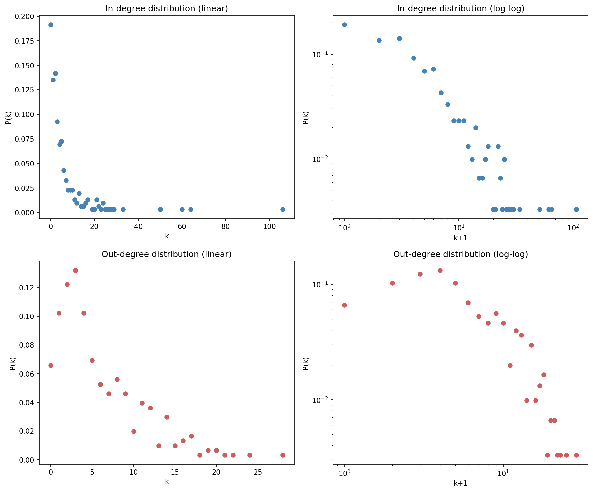
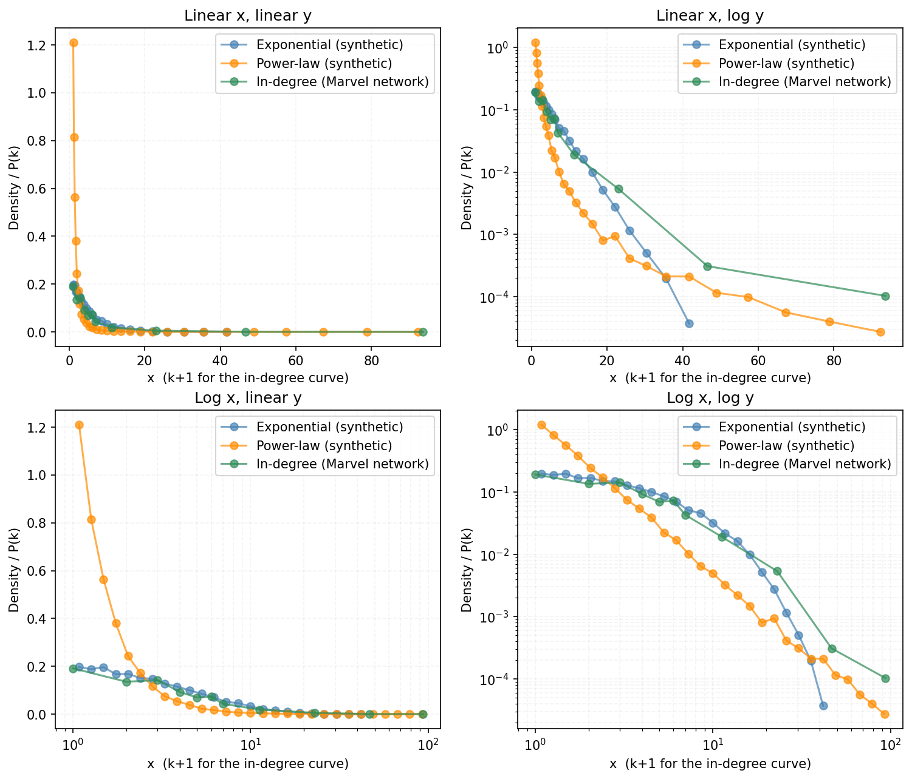

Week 1
Toolbox Shakedown
What I asked
How does the Marvel Wikipedia link network split by in-degree versus out-degree? Who gets linked to the most, who links out the most — and are they even the same characters?
What I did
I loaded the week-1 snapshot: 303 characters and 1784 directed links. Collapsing that to an undirected network gives 1434 pairs and an average degree of about 9.5, which matches the course page's numbers. From there I computed each character's in-degree and out-degree, and plotted both as P(k) against k+1 on linear and log-log axes. To keep the noisy tail readable, I used bins that start at width 1 and double in size further out.
What surprised me
In-degree vs out-degree

In-degree and out-degree turned out to tell very different stories. Spider-Man has an in-degree of 106 — about a third of the network links to him — but even the character with the most outgoing links, Betsy Braddock, only reaches 28. That makes sense once you think about where the links come from: other editors decide who links to you, but you decide who you link out to. That naturally caps out-degree in a way in-degree never is.
Power law or not?
I also compared the real in-degree distribution to synthetic exponential and power-law samples, and I don't see a clear pattern that it resembles either one cleanly. On the log-log plot, it might resemble the power law in the tail, but not clearly. On the linear-log plot, it looks more like the exponential for the lower values - but I'm not confident calling it exponential either.
From the earlier reading, a power law and a lognormal can fit almost the same curve, so "looks straight on log-log" isn't proof by itself.

Week 2
Not posted yet.
Week 3
Not posted yet.
Week 4
Not posted yet.
Week 5
Not posted yet.
Week 6
Not posted yet.
Week 7
Not posted yet.
Week 8
Not posted yet.
Group
Maria Poulsen
In math, a group is the study of symmetry — all the ways you can rearrange something without really changing it. Social graphs have their own version of this: a network's automorphism group is every way you can relabel its nodes while keeping the connections exactly the same, uncovering hidden symmetries in who's linked to whom.
This group currently consists of Maria Poulsen. A permanent group name is still to be decided.